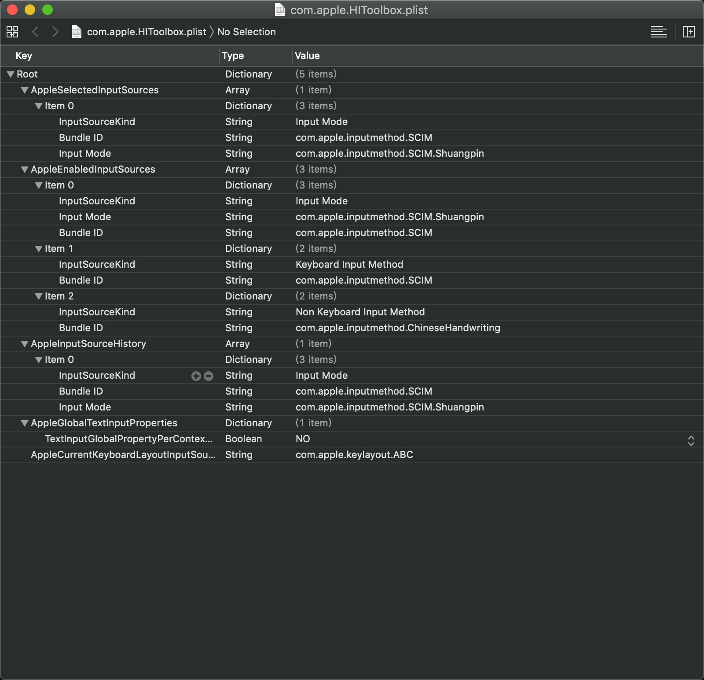

重点：toFixed不是四舍五入
MDN:
toFixed() 方法使用定点表示法来格式化一个数。
Chrome：
console.log((0.005).toFixed(2)) -> 0.01
console.log((0.015).toFixed(2)) -> 0.01
console.log((0.025).toFixed(2)) -> 0.03
console.log((0.035 …
重点：toFixed不是四舍五入
MDN:
toFixed() 方法使用定点表示法来格式化一个数。
Chrome：
console.log((0.005).toFixed(2)) -> 0.01
console.log((0.015).toFixed(2)) -> 0.01
console.log((0.025).toFixed(2)) -> 0.03
console.log((0.035 …~/Library/Preferences/com.apple.HIToolbox.plist文件,删除ABC相关内容后重启
下载地址：https://dev.mysql.com/downloads/mysql/
- wget https://cdn.mysql.com//Downloads/MySQL-5.7/mysql-server_5.7.21-1ubuntu14.04_amd64.deb-bundle.tar
tar -xf mysql-server_5.7.21-1ubuntu14.04_amd64.deb-bundle.tarsudo apt-get updatesudo apt-get upgradeapt-get install libaio1sudo dpkg -i mysql-common_5.7.21-1ubuntu14.04_amd64 …L_SHIFT+R_SHIFT+B
read morehttps://stackoverflow.com/questions/11598786/how-to-replace-non-printable-unicode-characters-javascript
most of which are quite printable
https://blog.csdn.net/ranjio_z/article/details/51993040?utm_source=blogxgwz8
http://www.unicode.org/charts/PDF/U2000.pdf
| unicode | 显示符号 |
|---|---|
| \u2000 | |
| \u2001 | |
| \u2002 | |
| \u2003 | |
| \u2004 | |
| \u2005 | |
| \u2006 | |
| \u2007 | |
| \u2008 | |
| \u2009 | |
| \u200a | |
| \u200b | |
| \u200c | |
| \u200d | |
| \u200e … |
update: 2015-04-28
标准插件形式Demo地址：cordova-plugin-test
主要是JS的回调，附Demo地址。
html里面调用已经写过了，只是没有对数据进行处理，CDVInvokedUrlCommand这个类里有两个重要的参数。
arguments
用于 …
如：new Date('2019-09-04 09:00:41') 得到的是 Invalid Date
使用 new Date('2019/09/04 09:00:41') 是正常的
MDN: a simplification of the ISO 8601 calendar date extended format
read moreThe standard string representation of a date time string is a simplification …